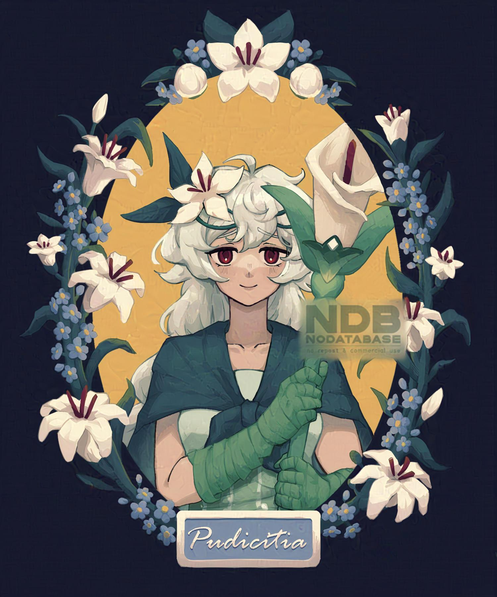
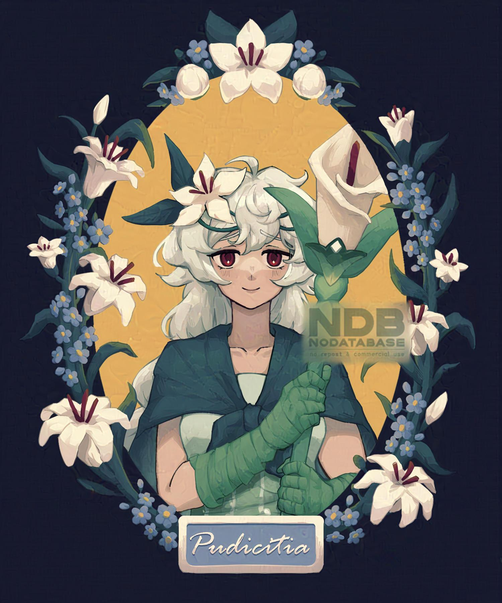

Maret 2024
Thorns
Kategori: Fanart (Arknights)
Pendapat (saya sendiri): "komposisinya agak ga pas, tapi suka cara shade-nya hehe"
-- 2022
Pudicitia
Kategori: Fanart (CRK)
Pendapat (saya sendiri): "masih suka lihat yg ini"
Maret 2024
Kategori: Fanart (Arknights)
Pendapat (saya sendiri): "komposisinya agak ga pas, tapi suka cara shade-nya hehe"
-- 2022
Kategori: Fanart (CRK)
Pendapat (saya sendiri): "masih suka lihat yg ini"